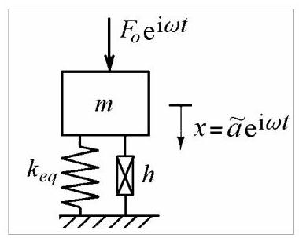
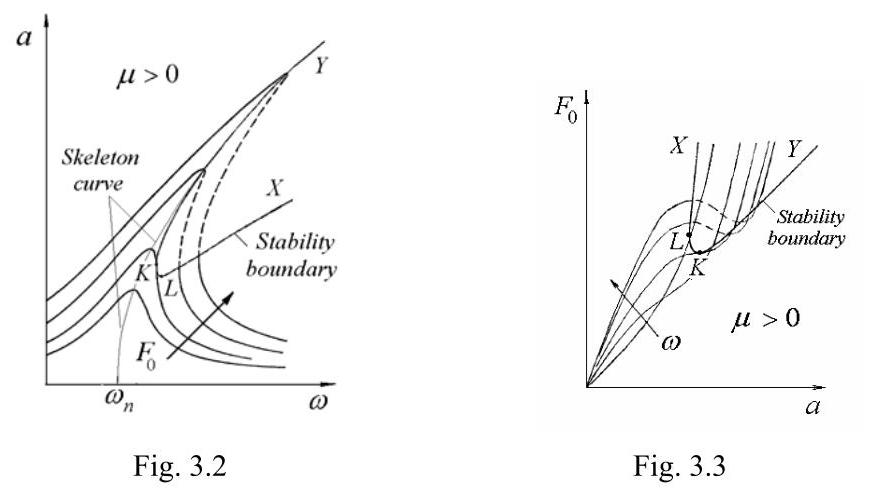
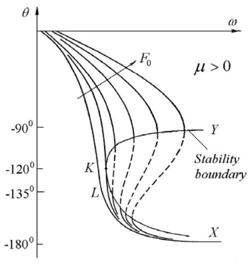
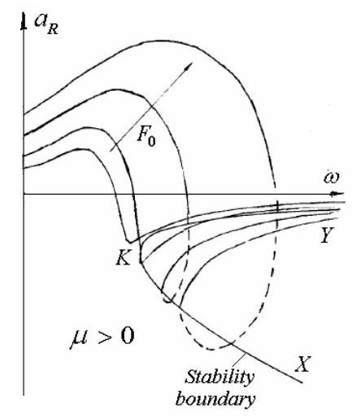
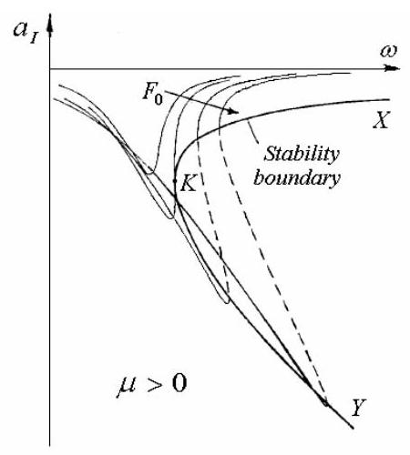
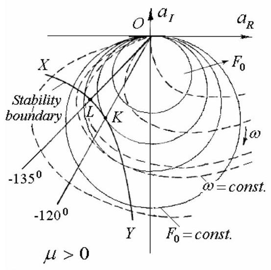
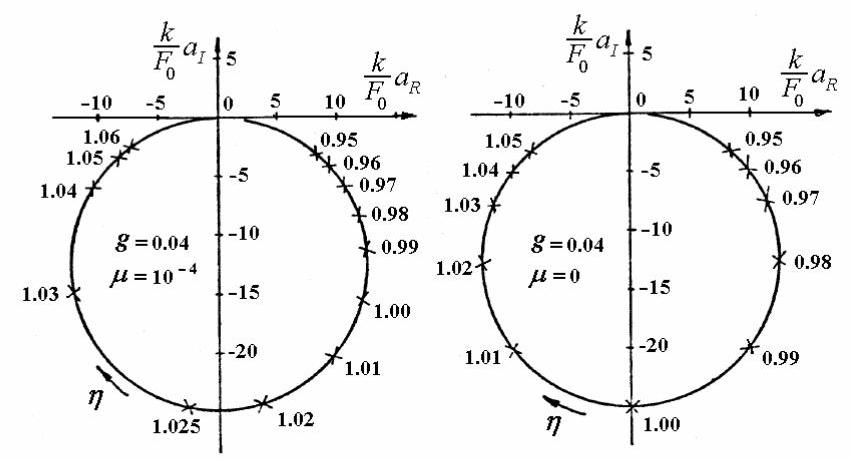
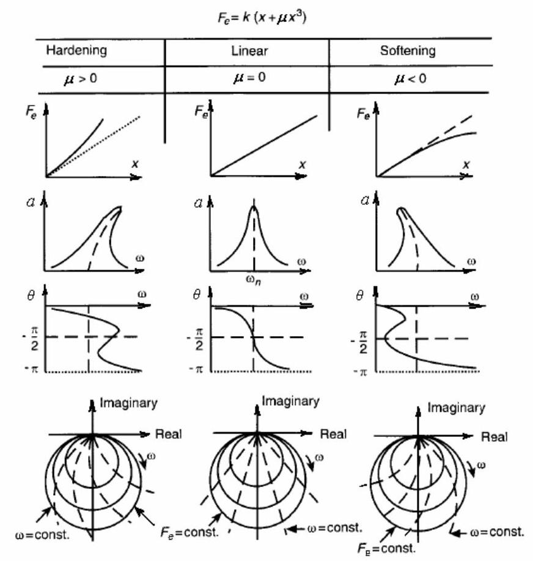

第13篇
3. 简单非线性系统
基于频率响应曲线分析，给出了参数估计方法。仅考虑简单非线性系统，以展示系统轻微非线性特性对频率响应曲线的畸变。这并非对振动结构非线性动力行为的全面论述，全面处理需另著专书。
3.1 非线性谐波响应
若非线性系统受简谐力激励，其稳态响应并非如线性系统那样为简谐，而是周期性的，因此可表示为谐波分量之和。对于具有局部弱非线性的系统，谐波平衡法是一种方便的分析工具，其基本假设是响应以基波分量为主。稳态响应被视为激励频率下的单一谐波，忽略次谐波或超谐波。仅在所谓主共振附近研究受迫响应。等效线性化法和描述函数概念亦可得到类似结果。
非线性恢复力函数由等效弹簧力和阻尼力近似。对于线性系统，恢复力函数(省略负号)可表示为
包含粘性阻尼和线性弹簧的贡献。
对于轻微非线性系统，恢复力可表示为
其中\({c}_{eq}\)为等效粘性阻尼系数，\({k}_{eq}\)为等效刚度。也可采用等效结构阻尼模型。
立方刚度
对于无预加载且无间隙的系统，弹性力可用立方刚度律(cubic stiffness law)表示
其中\(k\)为刚度函数在原点处的斜率，\(\mu\)为非线性系数，正值对应硬化弹簧(hardening spring)，负值对应软化弹簧(softening spring)。
对于简谐位移
弹性力(3.1)变为\({f}_{e} = {ka}\left( {\cos {\omega t} + \mu {a}^{2}{\cos }^{3}{\omega t}}\right)\)。
将\({\cos }^{3}{\omega t} = \frac{3}{4}\cos {\omega t} + \frac{1}{4}\cos {3\omega t}\)代入，并忽略\(\cos {3\omega t}\)中的高次谐波项，得到
其中等效刚度为
将该与振幅相关的刚度代入线性系统所得方程，即可得到非线性系统的动态响应。
非线性阻尼
非线性阻尼(non-linear damping)可借助等效粘性阻尼(equivalent viscous damping)概念进行研究。该方法将非线性阻尼力近似为等效的线性粘性阻尼力。等效准则是:非线性阻尼元件在一个振动周期内耗散的能量\({W}_{d}\)应等于经历相同谐波相对位移的等效粘性阻尼器所耗散的能量\({\pi \omega }{c}_{eq}{a}^{2}\)。
当\({W}_{d} = \pi {h}_{eq}{a}^{2}\)时，也可基于等效结构阻尼(equivalent structural damping)概念进行类似分析。
在等效粘性阻尼假设下得到的稳态解已被证明与采用Ritz平均法所得结果完全一致。利用非线性阻尼力时间历程的傅里叶级数展开第一项系数亦可得到相同数值。
广义非线性阻尼力在数学上可描述为与阻尼器两端相对速度的\(n\)次幂成正比。
其中\({c}_{n}\)定义为速度-n次幂阻尼系数(velocity-nth power damping coefficient)。
指数\(n\)和阻尼系数\({c}_{n}\)根据阻尼元件的性质确定。\(n = 0\)的取值对应库仑阻尼器(Coulomb damper)，此时阻尼系数\({c}_{0}\)等于干摩擦力\(R\)。类似地，\(n = 1\)和\(n = 2\)分别表示粘性阻尼和平方阻尼，此时\({c}_{n}\)分别成为阻尼系数\(c\)和\({c}_{2}\)。
指数\(n\)的其他取值可用于表征其他非线性阻尼特性。例如，汽车减振器产生的阻尼可用介于2.0至3.0之间的\(n\)值描述，具体取决于系统配置。
3.2 立方刚度(Cubic Stiffness)
图3.1所示为一个具有非线性弹簧和线性结构阻尼元件的单自由度系统。采用正系数的立方律作为描述硬化弹簧(hardening spring)特性的首次近似。

图3.1
结构阻尼(structural damping)是一种线性阻尼现象，其阻尼力与相对速度同相，但与阻尼器两端的相对位移成正比。
3.2.1 谐波响应(Harmonic Response)
若质量受到幅值为\({F}_{0}\)、频率为\(\omega\)的谐波力作用，则振动质量的Duffing型运动方程可写为
其中\(h = {gk}\)，且\(g\)可为等效结构阻尼因子(equivalent structural damping factor)。
响应的首次谐波近似选取如下形式
采用谐波线性化方法，忽略高次谐波项，故有
将(3.6)和(3.7)代入(3.5)得到位移的实部和虚部
其中
位移幅值
由以下隐式给出
相位角由以下公式计算
在方程(3.8)和(3.9)之间消去\(a\)和\({\eta }^{2}\)，得到向量\(\widetilde{a}\)端点在Argand平面上的轨迹，其方程为圆
它与线性系统导出的方程(2.82)相同。
在方程(3.9)和(3.11)之间消去\(a\)，得到响应的正交分量\({a}_{I}\)的频率依赖性
类似地，响应的同相分量\({a}_{R}\)的频率依赖性可表示为
3.2.2 频率响应特性
基于方程(3.12)，图3.2展示了固定阻尼\(g =\) const.和多个谐波力幅值\({F}_{0}\)下的幅频曲线。
响应曲线相对于方程的"骨架曲线"对称分布
该曲线通过最大振幅点。对于线性系统，它是横坐标为\(\omega = {\omega }_{n}\)的垂直线。对于具有硬化刚度\(\left( {\mu > 0}\right)\)的系统，骨架曲线向更高频率弯曲。对于具有软化刚度\(\left( {\mu < 0}\right)\)的系统，它向更低频率弯曲。
幅频曲线垂直切点轨迹由方程给出
并定义了"稳定性边界"\({XLKY}\)(图3.2)。
该曲线限定的区域内点定义了不稳定振动状态。在响应曲线上，它们用虚线表示。

相同的信息也包含在图3.3中，该图在\(g =\)为常数的情况下，于多个频率绘制了力-位移曲线。这些曲线称为恒频线或等时线(isochrones)。这些曲线水平切点的轨迹定义了稳定性边界。点\(K\)定义了无论位移大小如何振动均能保持稳定的最大力幅值。点\(L\)定义了无论力水平如何振动均能保持稳定的最大位移幅值。

图3.4
图3.4的相频曲线基于方程(3.13)。
同样，可以定义一条稳定性边界\({XLKY}\)，其方程为
它是相频曲线垂直切点的轨迹。
同相(实部)分量的频率响应曲线如图3.5所示，基于方程(3.16)。此时，稳定性边界\({XKY}\)的方程为
且适用于\({a}_{R} < 0\)。

图3.5

图3.6
正交(虚部)分量的频率响应曲线如图3.6所示，基于方程(3.15)。稳定性边界\({XKY}\)由方程
给出，并适用于\({a}_{R} < 0\)。
表示频率响应数据的最佳方式是将位移的矢量分量\({a}_{R}\)和\({a}_{I}\)(方程(3.8)和(3.9))绘制在阿冈图(Argand diagram)上，如图3.7所示。结果得到一族由方程(3.14)描述的圆。
极坐标图的优势在于将幅值、相位和激励频率的信息整合在一张图中。同时，主共振附近感兴趣的区域被放大，两种“跳跃”现象也更容易解释。
对于非线性系统，重要的是绘制响应位移分量，而不是易感性(位移/力)或其他频响函数(FRFs)。复平面上表示的每个点由两个参数定义——激励频率\(\omega\)和输入力的幅值\({F}_{0}\)。因此，需要绘制两组响应轨迹，即等时线(isochrones)——连接恒频点，以及奈奎斯特图(Nyquist plots)——连接恒定激励水平的点。由于位移幅值和相角都对力幅敏感，这些曲线的畸变可用于指示非线性行为。相位对非线性比幅值更敏感。

图3.7
在图3.7中，等时线用虚线绘制。其方程通过从方程(3.8)和(3.9)中消去\({F}_{0}\)得到，结果为
对于\(\mu = 0\)，即线性系统，方程(3.22)描述的是从坐标原点发散的直线。对于\(\mu \neq 0\)，方程(3.22)描述的是通过原点的曲线，随着\({F}_{0}\)增大而愈加扭曲。当\({F}_{0}\)增大时，等时线弯曲到与响应曲线相切。
奈奎斯特图与等时线相切点的轨迹定义了稳定性边界\({XLKY}\)。这是一条双曲线，其方程为
(仅对\({a}_{R} < 0,{a}_{I} < 0\)定义)，且关于坐标轴的角平分线\({a}_{R} = {a}_{I}\)对称。
稳定性边界\({XLKY}\)与角平分线\({a}_{R} = {a}_{I}\)在点\(L\)相交，该点频率为\({\omega }_{L} = {\omega }_{n}\sqrt{1 + {2g}}\)，距原点距离为\({a}_{L} = \sqrt{{4g}/{3\mu }}\)。对于更低频率或更小位移幅值，跳跃现象不会发生。
点\(K\)，即稳定性边界与参数\({F}_{0} = k\sqrt{{32}{g}^{3}/\left( {9\sqrt{3}\mu }\right) }\)的极坐标图以及参数\({\omega }_{K} = {\omega }_{n}\sqrt{1 + \sqrt{3g}}\)的等时线相切之处，指示了不稳定振动能够发生的最低力幅和激励频率。它对应于相位角\({\theta }_{K} = - {120}^{0}\)。点\(K\)和\(L\)对应于图3.5–3.7中标记的点。

图3.8
非线性刚度的影响是沿圆形奈奎斯特图平移频率:软化弹簧顺时针，硬化弹簧逆时针。主共振频率不再位于最大响应幅值处，如图3.8所示。对于相等的频率增量，相邻点之间的最大间距不再出现在主共振处，因此Kennedy-Pancu准则无法用于定位共振。
引入新的无量纲非线性系数\(\gamma = \mu {F}_{0}^{2}/{g}^{3}{k}^{2}\)，这意味着对于\(\gamma > {\gamma }_{K} = {32}/9\sqrt{3}\)或\(\omega > {\omega }_{K}\)，稳定性边界都会穿过奈奎斯特图和等时线。我们可以把满足\(\gamma < {\gamma }_{K}\)的系统视为弱非线性系统，把满足\(\gamma > {\gamma }_{K}\)的系统视为强非线性系统。按此分类，弱非线性仅沿响应曲线产生频率偏移，而强非线性将产生跳跃现象。

图3.9
一般而言，对于具有立方刚度和结构阻尼的单自由度系统，奈奎斯特图与线性系统一样呈圆形，只有等时线的“顶点”形状表明非线性行为。硬化刚度时它们逆时针弯曲，软化刚度时顺时针弯曲(图3.9)。通常所有等时线都以相同方式弯曲，主共振处不存在直线等时线。